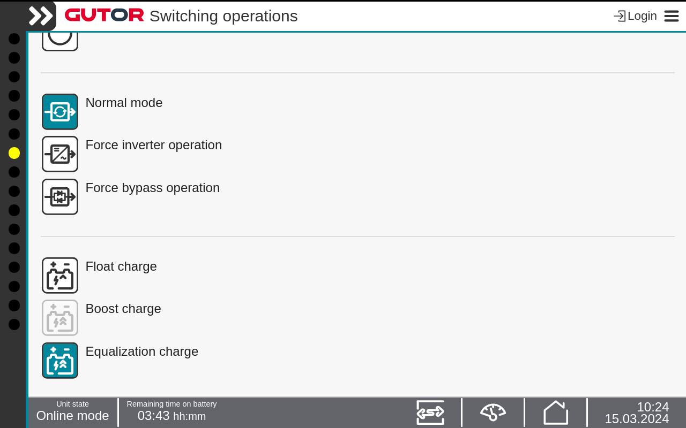

Important: This mode is a temporary mode and should not be used for an extended
period of time.
-
Press
the Switch operation icon in the Status bar.
-
Press the Equalization charge button. Confirm the change.
Note: The
current active rectifier charge mode is indicated by the green icon.

The rectifier have changed to equalization charge. The batteries
are charging at a higher DC voltage for a set period of time.